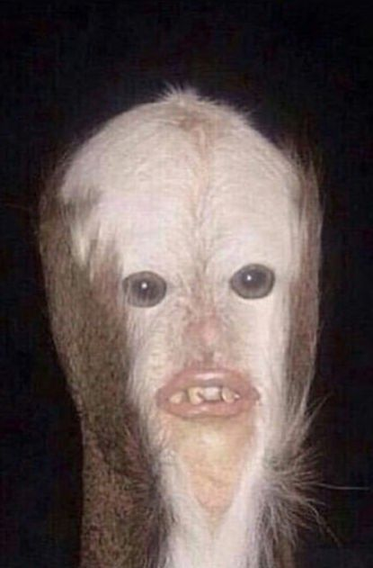
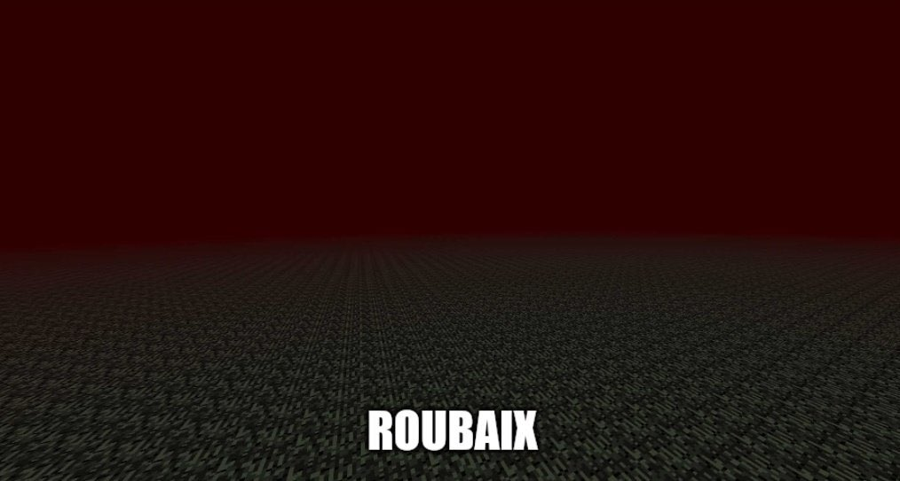

Présentation

Le poulette est une espèce fictive qui vient tout droit de vos pire cauchemars.
Ils sont originellment destiné à l'alimentation mais ils peuvent tout de même servir de réveil ou de démon de paralysie du sommeil.
Ils sont récupérés à la naissance à Roubaix
